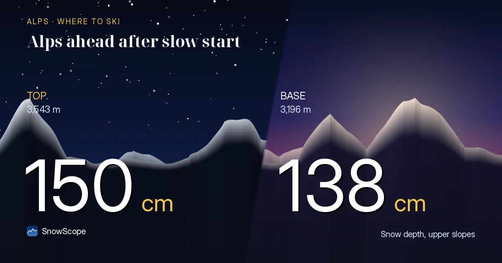
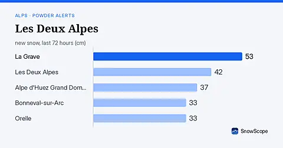
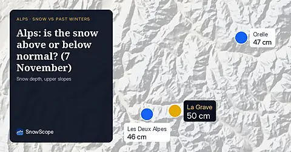

La Grave 171 cm: Alps ahead after slow start
La Grave's upper slopes hold 171 cm today, but that is still only 68% of what we normally see by late November. Yesterday's heavy snow across the high Alps has shifted the picture: the region gained 25,000 km2 of snow cover in two days, and 138 more resorts now have skiable base.
See the live snow forecast for La Grave in the SnowScope appSnow depth, powder alerts and the 3D map, free.
Why the Alps are running behind
At mid-height on La Grave, our estimates 56 cm, which beats only 13 of the past 46 years on this date. That is not a crisis, but it means the season started slower than usual.
The freezing level has been your enemy. On 22 November it rose to 2,880 m, so rain fell on middle elevations. The base of Alpe d'Huez shows zero snow because the base sits at only 1,124 m, low enough that rain reached it. Early-season snow is always thin; rocks lie close beneath the surface at lower heights.
| Resort | Snow depth | New snow, 72 h | Coming, next days | Top |
|---|---|---|---|---|
| La Grave | 171 cm | 127 cm | 57 cm | 3,543 m |
| Orelle | 166 cm | 121 cm | 39 cm | 3,221 m |
| Alpe d'Huez Grand Domaine | 125 cm | 123 cm | 57 cm | 3,306 m |
| Les Deux Alpes | 128 cm | 98 cm | 46 cm | 3,511 m |

Where to find the best snow right now
La Grave leads the region with 171 cm on upper slopes. Orelle sits close behind at 166 cm. Both resorts sit above 3,200 m at their peaks, so they kept the new snow from yesterday's storm without rain mixing in. Depths are steady across the whole terrain.
If you are chasing depth, stay high and north-facing. The freezing level on 22 November swung between 2,570 m and 2,880 m, so the boundary between snow and rain was sharp. South-facing slopes at mid-height have slushy or thin cover. Upper north-facing slopes keep clean, stable snow longest.

What comes next
More snow is in the forecast. By 25 November, the forecast shows 1,153 resorts will have skiable base, up from 1,104 today. The region will gain another 27,000 km2 of snow cover. La Grave will see 57 cm new over the next three days, and Orelle 39 cm. That boost will bring many middle-height runs into play and raise the floor for skiing at the lower resorts.
The freezing level will drop steeply on 23 and 25 November, to 2,300 m and 2,350 m respectively. That means more of each snowfall will stay as snow instead of turning to rain. By next weekend, the picture will look much healthier.
How this week compares to past winters
Early November snow is fragile, and comparing now to past years shows the region is behind but not unusually so. At 2,215 m on Alpe d'Huez, SnowScope shows 43 cm, which ranks deeper than 33 of 46 past years—a solid middle ranking. At 2,397 m on Les Deux Alpes, 35 cm places it ahead of 24 past years. The high peaks are closer to normal because they always get more snow earlier.
The trend is upward. The region jumped from 83,480 km2 of snow cover on 20 November to 108,680 km2 today. That 30,000 km2 gain in two days is the kind of shift that matters for opening terrain and improving conditions.
Practical tips for the next few days
Stick to groomed upper runs until more base builds. La Grave and Orelle have the depth to ski confidently above 3,200 m; lower resorts still have rocks close to the surface. North-facing slopes will have the best snow quality and longest-lasting cover. Watch the freezing level on 23 and 24 November—if it climbs above 2,500 m, rain will hit even high middle slopes, so schedule your highest-altitude runs for those days.
Tips for skiers
- Ski La Grave and Orelle above 3,200 m; the depth is there and the snow is clean. The base at Alpe d'Huez (1,124 m) has zero snow, so start runs at 2,215 m or higher.
- Head to north-facing slopes. They shed rain faster and hold spring snow longer. South-facing mid-slopes are thinner and may be slushy by afternoon on warm days.
- Check the resort website for lift openings and piste status. Early-season operations are often limited.
- If you plan off-piste, read the official avalanche bulletin. Early-season snow can be unstable, and thin base means rocks and stumps are hazards.
- Return in four days if you are flexible. By 25 November, another 39 to 57 cm will fall, and the freezing level will be much lower. Mid-height resorts will have better skiing.
About these numbers
Resort snow depths are the deepest snow on the resort's upper slopes on the date shown; they are estimates for an area, not a measurement at one point. Forecasts can change. Always read the official avalanche bulletin before going off-piste.
Official avalanche bulletins: EAWS (Alps)
Cite this report
For research, teaching or the press: the numbers and charts are free to reuse under CC BY 4.0 with this citation.
SnowScope (2026), La Grave 171 cm: Alps ahead after slow start, https://snowscope.app/blog/en/2026/11/alps-where-to-ski-best-snow-22-november-2026.html, accessed 2026-11-22
SnowScope (Atlas Labs). (2026, November 22). La Grave 171 cm: Alps ahead after slow start. SnowScope snow reports. https://snowscope.app/blog/en/2026/11/alps-where-to-ski-best-snow-22-november-2026.html
BibTeX
@misc{snowscope2026alpswheretoskibestsnow22,
author = {{SnowScope (Atlas Labs)}},
title = {La Grave 171 cm: Alps ahead after slow start},
year = {2026},
month = nov,
howpublished = {\url{https://snowscope.app/blog/en/2026/11/alps-where-to-ski-best-snow-22-november-2026.html}},
note = {Published 2026-11-22 12:59 UTC; accessed 2026-11-22}
}· CC BY 4.0 · Methods, data and tools →
La Grave: snow and temperature by height, this winter vs last (tools) →
Follow La Grave
Free: a message when fresh snow is coming, and the forecast every morning.
More snow reports

Les Deux Alpes: 38–42 cm of fresh snow in 72 hours (Alps, 14 November). La Grave got 53 cm of new snow in the last 72 hours, 7 cm of it in the last …

Les 2 Alpes forecast for 23–29 November: 47 cm at 3200 m, 41 cm at 2400 m, 14 cm at base. Wednesday 25 is the peak day.

We compared today's snow at 3 resorts in the Alps with the same date in each of the past 46 winters. 0 of them are clearly above normal.